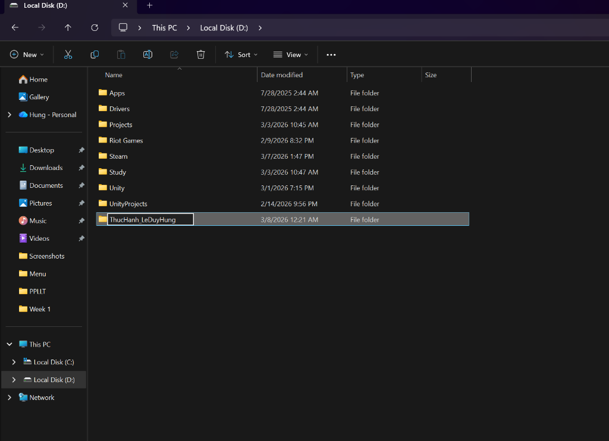
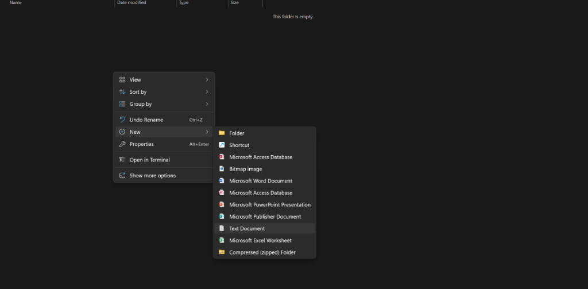

📁 Công đoạn 1: Khởi tạo thư mục thực hành
Bước đầu tiên trong quá trình tổ chức dữ liệu là thiết lập một không gian lưu trữ riêng biệt. Truy cập vào ổ đĩa trên máy tính (ví dụ ổ đĩa D) và tạo một thư mục mang tên cá nhân (như ThucHanh_LeDuyHung). Điều này giúp các bài tập không bị lẫn lộn với các tệp tin khác.

📝 Công đoạn 2: Tạo tệp tin văn bản (Text Document)
Bên trong thư mục vừa tạo, chúng ta bắt đầu khởi tạo các tệp tin lưu trữ dữ liệu. Bằng cách nhấp chuột phải vào vùng trống, chọn New và tiếp tục chọn Text Document. Đây là thao tác cơ bản nhất để tạo ra các ghi chú hoặc tệp tin văn bản thô (txt).

🔍 Công đoạn 3: Kiểm tra cấu trúc lưu trữ
Sau khi thực hiện các thao tác, người dùng quay trở lại giao diện File Explorer để xem tổng quan. Thư mục thực hành cá nhân đã được tạo thành công và xuất hiện cùng với các dữ liệu khác trên ổ đĩa, đảm bảo cấu trúc lưu trữ được hệ thống hóa.

✅ Công đoạn 4: Hoàn thiện không gian làm việc
Giao diện làm việc cuối cùng đã sẵn sàng. Không gian thư mục mang tên người dùng sẽ là nơi chứa toàn bộ các bài học, dự án và tệp tin liên quan trong suốt quá trình học tập. Việc tổ chức thư mục một cách có hệ thống ngay từ đầu sẽ giúp tiết kiệm tối đa thời gian tìm kiếm sau này.